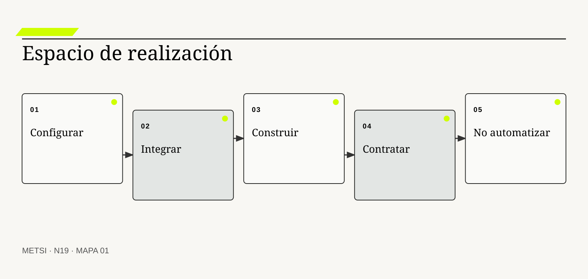
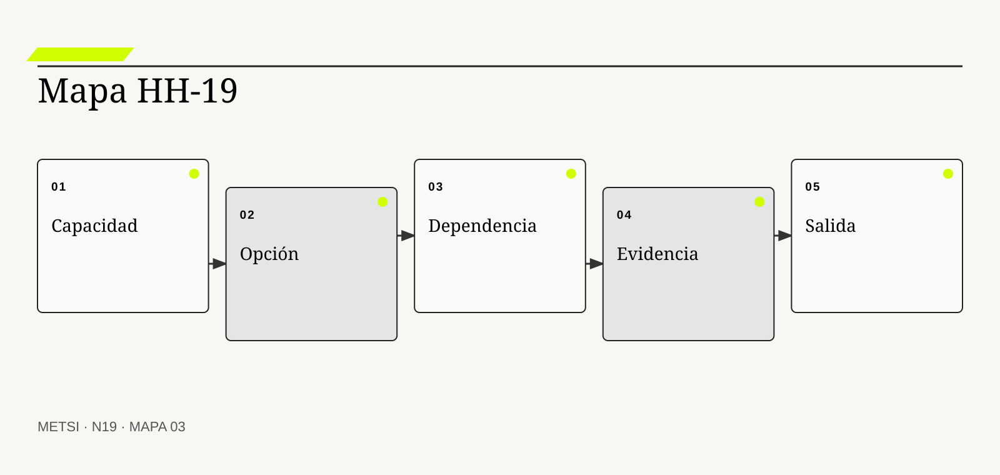

RC
Ronald Coase
Explicó por qué las fronteras de la organización dependen de costos de coordinación.

N19 transforma la adquisición en diseño sociotécnico.
Alternativas de realización: configurar, integrar, construir y no automatizar
Ruta de lectura: problema, distinciones, decisiones, prueba, transferencia y preparación.
Nota. SIN NUM. identifica aparatos de orientación y referencia.
Seis voces para ampliar, contrastar y discutir N19.
Explicó por qué las fronteras de la organización dependen de costos de coordinación.
Desarrolló el análisis de gobernanza y costos de transacción.
Mostraron cómo modularidad y opciones estructuran decisiones de diseño.
Contribuyó a comprender integración, patrones y costos evolutivos.

Desarrolla prácticas de riesgo para adquisición y cadena de suministro.
Promueve demanda segura y evaluación de proveedores de software.
N19 no resume estas fuentes ni las convierte en receta. Las pone en tensión para construir juicio profesional.
¿Cómo elegir una forma de realizar capacidad sin reducir la decisión a construir o comprar y sin trasladar riesgos invisibles a proveedores, operación o personas?
Hotel Horizonte selecciona una plataforma integral para reservas, habitaciones y comunicación. La propuesta promete mejores prácticas, implementación rápida y menor mantenimiento. La comparación se presenta como comprar algo probado o construir desde cero.
Después de adjudicar, aparecen decisiones omitidas. La plataforma no modela el rol competente local para excepciones, el canal exige cambiar contratos y los datos de cerraduras necesitan una integración específica. Para conservar la promesa comercial se agregan configuraciones, conectores y trabajo manual.
La organización no compró una capacidad terminada. Compró opciones, restricciones, dependencias y una relación de suministro que debe diseñarse. Parte del valor está en lo estándar; parte del riesgo nace en la adaptación. La disyuntiva original ocultó el sistema de trabajo necesario para hacer operable el producto.
El grupo responsable amplía el espacio de decisión. Puede configurar, integrar, construir componentes, contratar un servicio gestionado, mantener una operación manual temporal o decidir no automatizar una excepción rara y riesgosa. Cada opción se evalúa por consecuencia total, no por precio inicial.
La arquitectura de N15 y la coherencia de N16 permiten localizar fronteras. HH-18 aporta obligaciones y legado. N19 reúne esas evidencias en un expediente de realización con costo de vida, dependencia, control, reversibilidad y salida.
La elección deja de premiar una identidad tecnológica. Su pregunta es qué capacidad debe conservar la organización, qué puede delegar, qué evidencia necesita del proveedor y cómo reparará cuando la relación o el producto fallen.
El hotel compara seis rutas para la confirmación condicional: configurar reglas del PMS, integrar cerraduras, construir un servicio de decisión, contratar operación gestionada, sostener una verificación manual o no automatizar casos excepcionales. HH-19 muestra que ninguna domina en todo. La opción elegida combina estándar para lo común, integración para evidencia, operación manual protegida para bordes y una condición contractual de portabilidad y salida.
N19 transforma la adquisición en diseño sociotécnico. Amplía alternativas y compara capacidad, costo total, control, dependencia, seguridad, evidencia, reversibilidad y reparación durante todo el ciclo de vida.
N18 deja evidencia y decisiones abiertas que N19 utiliza sin reabrir su contenido. N19 transforma la adquisición en diseño sociotécnico. Amplía alternativas y compara capacidad, costo total, control, dependencia, seguridad, evidencia, reversibilidad y reparación durante todo el ciclo de vida.
N20 tomará la opción seleccionada y compondrá una estrategia metodológica con tailoring, hitos y condiciones de salida. N19 no convierte la elección en plan de ejecución.

N19 transforma la adquisición en diseño sociotécnico.
Coase, R. H. abre la pregunta por qué coordinar dentro o fuera de la organización. En N19, ese aporte pone a prueba decisiones concretas y no funciona como respaldo ornamental. Su alcance se conserva en N19: ninguna referencia sustituye el cuerpo de evidencia del caso ni el rol competente necesaria para intervenir.
Williamson, O. E. permite comparar formas de gobernanza bajo dependencia e incertidumbre. En N19, ese aporte pone a prueba decisiones concretas y no funciona como respaldo ornamental. Su alcance se conserva en N19: ninguna referencia sustituye el cuerpo de evidencia del caso ni el rol competente necesaria para intervenir.
Baldwin, C. Y. y Clark, K. B. relacionan modularidad con opciones y costos de cambio. En N19, ese aporte pone a prueba decisiones concretas y no funciona como respaldo ornamental. Su alcance se conserva en N19: ninguna referencia sustituye el cuerpo de evidencia del caso ni el rol competente necesaria para intervenir.
Fowler, M. aporta patrones para discutir integración y evolución sin reducirlas a conectividad. En N19, ese aporte pone a prueba decisiones concretas y no funciona como respaldo ornamental. Su alcance se conserva en N19: ninguna referencia sustituye el cuerpo de evidencia del caso ni el rol competente necesaria para intervenir.
NIST integra riesgo de cadena de suministro durante adquisición, operación y retiro. En N19, ese aporte pone a prueba decisiones concretas y no funciona como respaldo ornamental. Su alcance se conserva en N19: ninguna referencia sustituye el cuerpo de evidencia del caso ni el rol competente necesaria para intervenir.
NIST ubica SBOM, verificación y riesgo de proveedor en la compra de software. En N19, ese aporte pone a prueba decisiones concretas y no funciona como respaldo ornamental. Su alcance se conserva en N19: ninguna referencia sustituye el cuerpo de evidencia del caso ni el rol competente necesaria para intervenir.
CISA traduce demanda segura en preguntas y evidencia para adquirentes. En N19, ese aporte pone a prueba decisiones concretas y no funciona como respaldo ornamental. Su alcance se conserva en N19: ninguna referencia sustituye el cuerpo de evidencia del caso ni el rol competente necesaria para intervenir.
NTIA hace visible composición y dependencia de componentes. En N19, ese aporte pone a prueba decisiones concretas y no funciona como respaldo ornamental. Su alcance se conserva en N19: ninguna referencia sustituye el cuerpo de evidencia del caso ni el rol competente necesaria para intervenir.
ISO/IEC extiende seguridad a relaciones con proveedores y cadena de suministro. En N19, ese aporte pone a prueba decisiones concretas y no funciona como respaldo ornamental. Su alcance se conserva en N19: ninguna referencia sustituye el cuerpo de evidencia del caso ni el rol competente necesaria para intervenir.
European Union incorpora portabilidad, acceso y condiciones de cambio de proveedor. En N19, ese aporte pone a prueba decisiones concretas y no funciona como respaldo ornamental. Su alcance se conserva en N19: ninguna referencia sustituye el cuerpo de evidencia del caso ni el rol competente necesaria para intervenir.
NIST incorpora gobierno, medición y manejo del riesgo de inteligencia artificial. En N19, ese aporte pone a prueba decisiones concretas y no funciona como respaldo ornamental. Su alcance se conserva en N19: ninguna referencia sustituye el cuerpo de evidencia del caso ni el rol competente necesaria para intervenir.
FinOps Foundation ayuda a observar costo tecnológico como responsabilidad compartida y continua. En N19, ese aporte pone a prueba decisiones concretas y no funciona como respaldo ornamental. Su alcance se conserva en N19: ninguna referencia sustituye el cuerpo de evidencia del caso ni el rol competente necesaria para intervenir.

La decisión comienza por la capacidad que debe existir y no por el catálogo de productos. La definición fija el objeto de decisión. Si el equipo de N19 no puede expresar qué compromiso organiza, la categoría funciona como etiqueta y no como instrumento.
Se confunde necesidad con funcionalidad ofrecida. La distinción evita que una palabra familiar oculte otro mecanismo. En N19, confundirlos cambia qué se observa, qué se acepta como avance y quién debe intervenir.
En capacidad antes que solución, el recorrido causal debe mostrar qué condición habilita la acción, qué transformación ocurre y quién absorbe el resultado. Definir resultado, actores, evidencia y reparación evita que una opción conveniente cambie silenciosamente el problema. Si un salto depende sólo de una explicación oral, la estrategia todavía no puede gobernarlo.
La evidencia relevante para capacidad antes que solución no se limita al resultado promedio. Escenarios y criterios de aceptación muestran qué debe sostenerse con independencia del proveedor. N19 busca además casos negativos, diferencias entre poblaciones y señales de que la explicación elegida podría ser insuficiente.
Ejemplo. El hotel necesita confirmar entrega defendible, no adquirir un motor de reglas. En N19, el episodio vuelve visible la relación entre ritmo, autoridad, evidencia y capacidad de reparación.
El tradeoff central de capacidad antes que solución aparece entre anticipar y preservar opciones. Anticipar puede reducir coordinación y también fijar una premisa prematura; preservar opciones puede producir aprendizaje y también demorar una protección necesaria. La elección debe declarar cuál de esos costos acepta, durante cuánto tiempo y para quién.
La auditoría de capacidad antes que solución termina con una pregunta de uso: ¿qué podría decidir ahora una persona que antes no podía? En N19, la respuesta debe nombrar una acción, una restricción y una evidencia, no sólo una comprensión mejorada.
Operacionalizar capacidad antes que solución requiere asignar una unidad observable. El grupo responsable define qué episodio contará, desde qué momento, con qué población y bajo qué fuente. Después compara al menos un caso ordinario con otro que fuerce excepción. Esta precisión en N19 evita que una conclusión general se sostenga sólo en ejemplos convenientes.
La decisión profesional no termina en adoptar capacidad antes que solución. Se compara una ruta principal con una explicación rival, se explicita quién queda expuesto y se conserva un modo de revisar. Una capacidad demasiado abstracta impide comparar; debe expresarse en episodios y consecuencias. El límite forma parte del diseño y no una nota posterior.
El espacio de opciones incluye construir, configurar, integrar, contratar, operar manualmente y no automatizar. Conviene comenzar por su función profesional. Si el equipo de N19 no puede expresar qué compromiso organiza, la categoría funciona como etiqueta y no como instrumento.
Se confunde amplitud con indecisión. El contraste importa porque conduce a pruebas distintas. En N19, confundirlos cambia qué se observa, qué se acepta como avance y quién debe intervenir.
El mecanismo de espacio de opciones no se presume por el nombre. Variantes combinables permiten localizar qué parte necesita diferenciación y cuál puede estandarizarse. Debe localizarse dónde comienza, qué relaciones activa, qué demora introduce y qué capacidad de reparación queda disponible cuando la expectativa no se cumple.
Una afirmación sobre espacio de opciones gana fuerza cuando puede reconstruirse desde fuentes independientes. Una matriz explícita muestra supuestos, exclusiones y dependencias de cada ruta. La ausencia de señal también se interpreta: puede significar estabilidad, mala observación o exclusión del caso que más importa.
Ejemplo. La regla común se configura y la excepción accesible conserva revisión humana. En N19, el episodio vuelve visible la relación entre ritmo, autoridad, evidencia y capacidad de reparación.
La escala modifica espacio de opciones. Una solución válida para un equipo puede fallar cuando atraviesa sedes, turnos o proveedores porque aumenta la distancia entre señal y autoridad. Antes de ampliar, N19 prueba si la misma decisión conserva significado y reparación bajo esa nueva distribución.
Para evitar consenso aparente, espacio de opciones se revisa con alguien afectado y con alguien responsable de reparar. Las dos perspectivas pueden valorar resultados diferentes y obligan a declarar la prioridad elegida.
En la práctica, espacio de opciones atraviesa más de un área. Se identifican handoffs, esperas, decisiones y datos que cada participante puede ver. Cuando dos áreas usan evidencia distinta en N19, el expediente conserva la divergencia hasta determinar si representa error, perspectiva legítima o una brecha que la estrategia debe resolver.
En una revisión, espacio de opciones debe responder tres preguntas: qué mejora, qué desplaza y qué vuelve más difícil de revertir. Demasiadas opciones consumen análisis; se eliminan sólo con criterios trazables. Si esas respuestas cambian, también debe cambiar el compromiso, aunque el trabajo previo haya sido técnicamente correcto.
Configurar adapta comportamiento mediante mecanismos previstos por un producto. El concepto adquiere valor cuando cambia una elección. Si el equipo de N19 no puede expresar qué compromiso organiza, la categoría funciona como etiqueta y no como instrumento.
No equivale a personalizar código ni a aceptar toda práctica del proveedor. Su vecino conceptual puede parecer equivalente y no lo es. En N19, confundirlos cambia qué se observa, qué se acepta como avance y quién debe intervenir.
Comprender configurar exige seguir la decisión en el tiempo. Reduce desarrollo propio y conserva actualización si la necesidad cabe en puntos de variación soportados. El análisis distingue condición, intervención, señal temprana y consecuencia para evitar atribuir a una práctica un efecto producido por otro cambio simultáneo.
El ensayo de configurar debe formularse antes de conocer el resultado. Pruebas de upgrade, límites y exportación verifican sostenibilidad. Se registra qué observación sostendría continuar, cuál obligaría a adaptar y cuál activaría detención o escalamiento.
Ejemplo. Estados y permisos estándar cubren la mayoría de reservas. En N19, el episodio vuelve visible la relación entre ritmo, autoridad, evidencia y capacidad de reparación.
El tiempo también altera configurar. Una evidencia suficiente para explorar puede ser insuficiente para operar de forma permanente. Por eso se separan prueba local, compromiso transitorio y condición estable, y cada estado conserva fecha, alcance y responsable de revisión.
El registro de configurar conserva una explicación rival. Si esa alternativa predice mejor el episodio siguiente, el equipo cambia de curso sin reescribir retrospectivamente lo que creía saber.
La gobernanza de configurar incluye quién puede proponer, aprobar, ejecutar, observar y reparar. Esas funciones no se presumen por cargo ni por permiso técnico. N19 las prueba en un escenario donde falta la persona habitual, porque una capacidad que sólo funciona con conocimiento privado todavía no pertenece a la organización.
El juicio sobre configurar incluye distribución de consecuencias. Configuraciones extremas pueden ser código oculto y crear dependencia difícil de comprender. Una mejora agregada no alcanza si concentra espera, riesgo o trabajo invisible en un grupo sin autoridad para discutir la decisión.
Integrar coordina componentes mediante contratos sintácticos, semánticos, temporales y operacionales. La definición fija el objeto de decisión. Si el equipo de N19 no puede expresar qué compromiso organiza, la categoría funciona como etiqueta y no como instrumento.
No es sólo conectar APIs. La distinción evita que una palabra familiar oculte otro mecanismo. En N19, confundirlos cambia qué se observa, qué se acepta como avance y quién debe intervenir.
La explicación operacional de integrar conecta personas, reglas y tecnología. La capacidad emerge de correspondencias, secuencias, observabilidad, autoridad y manejo de fallas parciales. Esa conexión permite decidir qué parte puede modificarse localmente y cuál requiere coordinación con otras autoridades o capacidades.
Para auditar integrar, conviene combinar evidencia de diseño, ejecución y consecuencia. Pruebas end-to-end y reconciliación muestran si la promesa sobrevive a demora y duplicación. Ninguna fuente domina automáticamente; una especificación correcta puede convivir con una operación dañina.
Ejemplo. Cerradura, PMS y comunicación producen una confirmación conjunta. En N19, el episodio vuelve visible la relación entre ritmo, autoridad, evidencia y capacidad de reparación.
Existe además una dimensión política en integrar. La opción más eficiente puede reducir la capacidad de una persona para cuestionar una elección o trasladar trabajo sin reconocerlo. N19 registra esa distribución y no la esconde dentro de un indicador agregado.
Una prueba adversa de integrar introduce demora, ausencia de autoridad o dato incompleto. El objetivo de N19 no es cubrir todas las fallas, sino revelar si la estrategia mantiene una salida segura fuera del camino ordinario.
El indicador de integrar se elige después de formular la decisión. Puede combinar tiempo, calidad, distribución y costo de reparación. Una cifra aislada rara vez explica el mecanismo. En N19, la lectura conjunta de señales evita optimizar velocidad mientras aumenta retrabajo, exclusión o dependencia.
La condición de cierre de integrar no es perfección. Más componentes pueden aumentar opciones y también multiplicar puntos de falla y responsabilidades difusas. Es evidencia suficiente para el uso previsto, riesgo residual aceptado por autoridad y una ruta clara cuando el supuesto deje de cumplirse.
Construir crea control directo sobre una capacidad cuando su diferenciación o restricción lo justifica. Conviene comenzar por su función profesional. Si el equipo de N19 no puede expresar qué compromiso organiza, la categoría funciona como etiqueta y no como instrumento.
No significa independencia total ni desarrollo artesanal de todo. El contraste importa porque conduce a pruebas distintas. En N19, confundirlos cambia qué se observa, qué se acepta como avance y quién debe intervenir.
Para que construir sea algo más que una etiqueta, debe existir una cadena examinable. Permite diseñar reglas y evolución propias, pero exige equipos, seguridad, operación y mantenimiento sostenidos. La cadena incluye supuestos, handoffs y efectos laterales que una descripción ideal suele omitir.
El grupo responsable no declara resuelto construir por acuerdo retórico. Costo de cambio, calidad, tiempo de recuperación y continuidad de conocimiento revelan viabilidad. Una persona ajena al diseño debe poder repetir la prueba y comprender por qué el resultado habilita una elección concreta.
Ejemplo. Un servicio pequeño concentra la decisión que ningún producto representa. En N19, el episodio vuelve visible la relación entre ritmo, autoridad, evidencia y capacidad de reparación.
La mantenibilidad de construir se prueba mediante cambio deliberado. Se modifica una regla, una fuente o una dependencia y se observa quién detecta el impacto, cuánto tarda en responder y qué información necesita. En N19, si la respuesta depende de memoria privada, la capacidad todavía es frágil.
El costo de construir se observa tanto en presupuesto como en atención, espera, coordinación y dependencia. Lo que no figura en una factura puede seguir siendo el costo que define la viabilidad.
La transición asociada con construir necesita un estado intermedio explícito. Durante ese período conviven reglas, versiones o capacidades diferentes. N19 declara cuál rige para cada población, cómo se comunica y qué contingencia protege a quien podría quedar entre ambos sistemas.
El análisis de construir evita dos extremos: conservar por inercia y cambiar por identidad metodológica. Control sin capacidad organizacional produce software propio que nadie puede sostener. Entre ambos queda una elección provisional con fecha, responsable y prueba de revisión.
Tercerizar delega actividades bajo acuerdos sin transferir responsabilidad por el outcome. El concepto adquiere valor cuando cambia una elección. Si el equipo de N19 no puede expresar qué compromiso organiza, la categoría funciona como etiqueta y no como instrumento.
Se confunde contrato con control efectivo. Su vecino conceptual puede parecer equivalente y no lo es. En N19, confundirlos cambia qué se observa, qué se acepta como avance y quién debe intervenir.
El valor de servicio gestionado y tercerización aparece al contrastar alternativas. Niveles de servicio, evidencia, escalamiento, acceso y cooperación en incidentes organizan la relación. Si dos opciones producen el mismo entregable inmediato, el mecanismo permite compararlas por aprendizaje, dependencia, riesgo residual y posibilidad de salida.
La suficiencia de evidencia para servicio gestionado y tercerización depende del costo de equivocarse. Pruebas de crisis y reportes verificables muestran si el proveedor puede responder. A mayor irreversibilidad o desigualdad de daño, mayor contraste, supervisión y autoridad se requieren.
Ejemplo. Un servicio opera comunicaciones nocturnas con supervisión del hotel. En N19, el episodio vuelve visible la relación entre ritmo, autoridad, evidencia y capacidad de reparación.
Finalmente, servicio gestionado y tercerización debe convivir con otras decisiones. Optimizarla de manera aislada puede empeorar flujo, seguridad o comprensión. HH-19 N19 explicita dependencias y evita que una mejora local se presente como outcome completo del sistema.
La revisión de servicio gestionado y tercerización fija fecha y desencadenante. Puede ocurrir por incidente, cambio normativo, nueva población o evidencia acumulada. Sin esa regla en N19, una elección provisional se vuelve permanente por olvido.
El cierre de servicio gestionado y tercerización debe sobrevivir a una revisión independiente. La evidencia, las decisiones y los límites se almacenan de manera que otra persona pueda cuestionarlos. En N19, la trazabilidad no busca eliminar desacuerdo; busca que el desacuerdo se concentre en supuestos examinables y no en recuerdos incompatibles.
La opción de realización debe poder explicar por qué servicio gestionado y tercerización recibe cierta inversión y no otra. El contrato no repara por sí mismo; la organización necesita capacidad para gobernar al proveedor. Esa explicación conecta valor, costo, aprendizaje y reparación, y permanece abierta a evidencia nueva.
Una operación manual puede ser una solución legítima cuando volumen, variabilidad o consecuencia no justifican automatización. La definición fija el objeto de decisión. Si el equipo de N19 no puede expresar qué compromiso organiza, la categoría funciona como etiqueta y no como instrumento.
Se confunde con atraso o parche vergonzante. La distinción evita que una palabra familiar oculte otro mecanismo. En N19, confundirlos cambia qué se observa, qué se acepta como avance y quién debe intervenir.
En trabajo manual deliberado, el recorrido causal debe mostrar qué condición habilita la acción, qué transformación ocurre y quién absorbe el resultado. Personas interpretan contexto y excepciones, aunque introducen demora, carga, variación y dependencia. Si un salto depende sólo de una explicación oral, la estrategia todavía no puede gobernarlo.
La evidencia relevante para trabajo manual deliberado no se limita al resultado promedio. Tiempos, errores, bienestar, cobertura y capacidad de escalamiento permiten evaluar. N19 busca además casos negativos, diferencias entre poblaciones y señales de que la explicación elegida podría ser insuficiente.
Ejemplo. Recepción verifica manualmente casos raros durante la transición. En N19, el episodio vuelve visible la relación entre ritmo, autoridad, evidencia y capacidad de reparación.
El tradeoff central de trabajo manual deliberado aparece entre anticipar y preservar opciones. Anticipar puede reducir coordinación y también fijar una premisa prematura; preservar opciones puede producir aprendizaje y también demorar una protección necesaria. La elección debe declarar cuál de esos costos acepta, durante cuánto tiempo y para quién.
La auditoría de trabajo manual deliberado termina con una pregunta de uso: ¿qué podría decidir ahora una persona que antes no podía? En N19, la respuesta debe nombrar una acción, una restricción y una evidencia, no sólo una comprensión mejorada.
Operacionalizar trabajo manual deliberado requiere asignar una unidad observable. El grupo responsable define qué episodio contará, desde qué momento, con qué población y bajo qué fuente. Después compara al menos un caso ordinario con otro que fuerce excepción. Esta precisión en N19 evita que una conclusión general se sostenga sólo en ejemplos convenientes.
La decisión profesional no termina en adoptar trabajo manual deliberado. Se compara una ruta principal con una explicación rival, se explicita quién queda expuesto y se conserva un modo de revisar. Si el trabajo invisible recae siempre en el mismo grupo, la aparente flexibilidad distribuye daño. El límite forma parte del diseño y no una nota posterior.
No automatizar es una elección positiva de límite cuando automatizar ampliaría daño, vigilancia o rigidez. Conviene comenzar por su función profesional. Si el equipo de N19 no puede expresar qué compromiso organiza, la categoría funciona como etiqueta y no como instrumento.
No equivale a abandonar la mejora. El contraste importa porque conduce a pruebas distintas. En N19, confundirlos cambia qué se observa, qué se acepta como avance y quién debe intervenir.
El mecanismo de no automatizar no se presume por el nombre. Puede simplificar reglas, eliminar demanda o rediseñar servicio antes de informatizar. Debe localizarse dónde comienza, qué relaciones activa, qué demora introduce y qué capacidad de reparación queda disponible cuando la expectativa no se cumple.
Una afirmación sobre no automatizar gana fuerza cuando puede reconstruirse desde fuentes independientes. La evidencia compara beneficio marginal con costo, riesgo y pérdida de discreción legítima. La ausencia de señal también se interpreta: puede significar estabilidad, mala observación o exclusión del caso que más importa.
Ejemplo. El hotel no automatiza compensaciones excepcionales y conserva revisión con autoridad. En N19, el episodio vuelve visible la relación entre ritmo, autoridad, evidencia y capacidad de reparación.
La escala modifica no automatizar. Una solución válida para un equipo puede fallar cuando atraviesa sedes, turnos o proveedores porque aumenta la distancia entre señal y autoridad. Antes de ampliar, N19 prueba si la misma decisión conserva significado y reparación bajo esa nueva distribución.
Para evitar consenso aparente, no automatizar se revisa con alguien afectado y con alguien responsable de reparar. Las dos perspectivas pueden valorar resultados diferentes y obligan a declarar la prioridad elegida.
En la práctica, no automatizar atraviesa más de un área. Se identifican handoffs, esperas, decisiones y datos que cada participante puede ver. Cuando dos áreas usan evidencia distinta en N19, el expediente conserva la divergencia hasta determinar si representa error, perspectiva legítima o una brecha que la estrategia debe resolver.
En una revisión, no automatizar debe responder tres preguntas: qué mejora, qué desplaza y qué vuelve más difícil de revertir. La decisión requiere revisión futura; no debe proteger ineficiencia o arbitrariedad. Si esas respuestas cambian, también debe cambiar el compromiso, aunque el trabajo previo haya sido técnicamente correcto.

El costo total incluye adquisición, integración, operación, cambio, riesgo, salida y reparación. El concepto adquiere valor cuando cambia una elección. Si el equipo de N19 no puede expresar qué compromiso organiza, la categoría funciona como etiqueta y no como instrumento.
Se confunde con precio, horas de desarrollo o suscripción. Su vecino conceptual puede parecer equivalente y no lo es. En N19, confundirlos cambia qué se observa, qué se acepta como avance y quién debe intervenir.
Comprender costo total de vida exige seguir la decisión en el tiempo. Costos diferidos y transferidos cambian qué opción resulta económica para la organización y afectados. El análisis distingue condición, intervención, señal temprana y consecuencia para evitar atribuir a una práctica un efecto producido por otro cambio simultáneo.
El ensayo de costo total de vida debe formularse antes de conocer el resultado. Escenarios de crecimiento, incidente, auditoría y retiro hacen visibles obligaciones. Se registra qué observación sostendría continuar, cuál obligaría a adaptar y cuál activaría detención o escalamiento.
Ejemplo. Una licencia barata exige conectores y conciliación permanente. En N19, el episodio vuelve visible la relación entre ritmo, autoridad, evidencia y capacidad de reparación.
El tiempo también altera costo total de vida. Una evidencia suficiente para explorar puede ser insuficiente para operar de forma permanente. Por eso se separan prueba local, compromiso transitorio y condición estable, y cada estado conserva fecha, alcance y responsable de revisión.
El registro de costo total de vida conserva una explicación rival. Si esa alternativa predice mejor el episodio siguiente, el equipo cambia de curso sin reescribir retrospectivamente lo que creía saber.
La gobernanza de costo total de vida incluye quién puede proponer, aprobar, ejecutar, observar y reparar. Esas funciones no se presumen por cargo ni por permiso técnico. N19 las prueba en un escenario donde falta la persona habitual, porque una capacidad que sólo funciona con conocimiento privado todavía no pertenece a la organización.
El juicio sobre costo total de vida incluye distribución de consecuencias. Toda estimación es incierta; importa comparar supuestos y sensibilidad, no fingir precisión. Una mejora agregada no alcanza si concentra espera, riesgo o trabajo invisible en un grupo sin autoridad para discutir la decisión.
La dependencia aparece cuando cambiar de proveedor exige costos o permisos que limitan decisión futura. La definición fija el objeto de decisión. Si el equipo de N19 no puede expresar qué compromiso organiza, la categoría funciona como etiqueta y no como instrumento.
No toda relación estable es lock-in abusivo. La distinción evita que una palabra familiar oculte otro mecanismo. En N19, confundirlos cambia qué se observa, qué se acepta como avance y quién debe intervenir.
La explicación operacional de dependencia y poder de proveedor conecta personas, reglas y tecnología. Datos, formatos, identidad, conocimiento, integraciones y cláusulas acumulan costos de salida. Esa conexión permite decidir qué parte puede modificarse localmente y cuál requiere coordinación con otras autoridades o capacidades.
Para auditar dependencia y poder de proveedor, conviene combinar evidencia de diseño, ejecución y consecuencia. Una prueba de exportación y sustitución revela control real. Ninguna fuente domina automáticamente; una especificación correcta puede convivir con una operación dañina.
Ejemplo. El hotel ensaya recuperar reservas, reglas y auditoría en formato utilizable. En N19, el episodio vuelve visible la relación entre ritmo, autoridad, evidencia y capacidad de reparación.
Existe además una dimensión política en dependencia y poder de proveedor. La opción más eficiente puede reducir la capacidad de una persona para cuestionar una elección o trasladar trabajo sin reconocerlo. N19 registra esa distribución y no la esconde dentro de un indicador agregado.
Una prueba adversa de dependencia y poder de proveedor introduce demora, ausencia de autoridad o dato incompleto. El objetivo de N19 no es cubrir todas las fallas, sino revelar si la estrategia mantiene una salida segura fuera del camino ordinario.
El indicador de dependencia y poder de proveedor se elige después de formular la decisión. Puede combinar tiempo, calidad, distribución y costo de reparación. Una cifra aislada rara vez explica el mecanismo. En N19, la lectura conjunta de señales evita optimizar velocidad mientras aumenta retrabajo, exclusión o dependencia.
La condición de cierre de dependencia y poder de proveedor no es perfección. Portabilidad contractual sin capacidad técnica es promesa vacía; duplicar proveedores puede aumentar complejidad. Es evidencia suficiente para el uso previsto, riesgo residual aceptado por autoridad y una ruta clara cuando el supuesto deje de cumplirse.
La cadena de suministro incluye componentes, servicios, personas y procesos externos que afectan seguridad y continuidad. Conviene comenzar por su función profesional. Si el equipo de N19 no puede expresar qué compromiso organiza, la categoría funciona como etiqueta y no como instrumento.
Se confunde evaluación inicial con gobierno permanente. El contraste importa porque conduce a pruebas distintas. En N19, confundirlos cambia qué se observa, qué se acepta como avance y quién debe intervenir.
Para que riesgo de cadena de suministro sea algo más que una etiqueta, debe existir una cadena examinable. Vulnerabilidades, actualizaciones, subcontratación y cambios de propiedad alteran exposición durante el uso. La cadena incluye supuestos, handoffs y efectos laterales que una descripción ideal suele omitir.
El grupo responsable no declara resuelto riesgo de cadena de suministro por acuerdo retórico. SBOM, atestaciones, monitoreo e incidentes aportan evidencia incompleta pero útil. Una persona ajena al diseño debe poder repetir la prueba y comprender por qué el resultado habilita una elección concreta.
Ejemplo. Una biblioteca del conector introduce una falla crítica. En N19, el episodio vuelve visible la relación entre ritmo, autoridad, evidencia y capacidad de reparación.
La mantenibilidad de riesgo de cadena de suministro se prueba mediante cambio deliberado. Se modifica una regla, una fuente o una dependencia y se observa quién detecta el impacto, cuánto tarda en responder y qué información necesita. En N19, si la respuesta depende de memoria privada, la capacidad todavía es frágil.
El costo de riesgo de cadena de suministro se observa tanto en presupuesto como en atención, espera, coordinación y dependencia. Lo que no figura en una factura puede seguir siendo el costo que define la viabilidad.
La transición asociada con riesgo de cadena de suministro necesita un estado intermedio explícito. Durante ese período conviven reglas, versiones o capacidades diferentes. N19 declara cuál rige para cada población, cómo se comunica y qué contingencia protege a quien podría quedar entre ambos sistemas.
El análisis de riesgo de cadena de suministro evita dos extremos: conservar por inercia y cambiar por identidad metodológica. Exigir listas sin capacidad de actuar produce cumplimiento documental y no reducción de riesgo. Entre ambos queda una elección provisional con fecha, responsable y prueba de revisión.
Adquirir IA implica evaluar modelo, datos, integración, supervisión, desempeño, dependencia y reparación. El concepto adquiere valor cuando cambia una elección. Si el equipo de N19 no puede expresar qué compromiso organiza, la categoría funciona como etiqueta y no como instrumento.
Se confunde demo convincente con capacidad operacional. Su vecino conceptual puede parecer equivalente y no lo es. En N19, confundirlos cambia qué se observa, qué se acepta como avance y quién debe intervenir.
El valor de adquisición de inteligencia artificial aparece al contrastar alternativas. El comportamiento probabilístico y el cambio del proveedor requieren evaluación continua y límites de autoridad. Si dos opciones producen el mismo entregable inmediato, el mecanismo permite compararlas por aprendizaje, dependencia, riesgo residual y posibilidad de salida.
La suficiencia de evidencia para adquisición de inteligencia artificial depende del costo de equivocarse. Casos representativos, grupos afectados, drift, seguridad y posibilidad de apelación sostienen la decisión. A mayor irreversibilidad o desigualdad de daño, mayor contraste, supervisión y autoridad se requieren.
Ejemplo. Un asistente redacta mensajes pero no confirma estados ni promete compensaciones. En N19, el episodio vuelve visible la relación entre ritmo, autoridad, evidencia y capacidad de reparación.
Finalmente, adquisición de inteligencia artificial debe convivir con otras decisiones. Optimizarla de manera aislada puede empeorar flujo, seguridad o comprensión. HH-19 N19 explicita dependencias y evita que una mejora local se presente como outcome completo del sistema.
La revisión de adquisición de inteligencia artificial fija fecha y desencadenante. Puede ocurrir por incidente, cambio normativo, nueva población o evidencia acumulada. Sin esa regla en N19, una elección provisional se vuelve permanente por olvido.
El cierre de adquisición de inteligencia artificial debe sobrevivir a una revisión independiente. La evidencia, las decisiones y los límites se almacenan de manera que otra persona pueda cuestionarlos. En N19, la trazabilidad no busca eliminar desacuerdo; busca que el desacuerdo se concentre en supuestos examinables y no en recuerdos incompatibles.
La opción de realización debe poder explicar por qué adquisición de inteligencia artificial recibe cierta inversión y no otra. Si no puede obtenerse evidencia suficiente o salida practicable, la opción puede ser no usar IA. Esa explicación conecta valor, costo, aprendizaje y reparación, y permanece abierta a evidencia nueva.
El instrumento organiza una elección concreta y no una descripción total. Cada campo debe completarse con evidencia disponible, incertidumbre explícita y autoridad identificada. Si un campo todavía no puede responderse, se registra como asunto abierto y no se completa por inferencia.
HH-19 se prueba con un escenario ordinario y uno adverso. Una persona que no participó en su construcción debe poder reconstruir qué se decidió, por qué, qué permanece incierto y cuál es la próxima puerta. El cierre no exige certeza total; exige incertidumbre gobernada y una salida practicable.
Una universidad quiere identificar estudiantes que necesitan apoyo. Puede comprar una plataforma predictiva, configurar reglas, integrar datos existentes, construir un modelo, operar revisión manual o no automatizar la clasificación.
HH-19 separa capacidad de acompañamiento y mecanismo de puntuación. Evalúa privacidad, evidencia, sesgo, capacidad docente, apelación y salida. Una opción combinada usa reglas transparentes para convocar y reserva decisiones a equipos con contexto.
La transferencia muestra que comprar tecnología no compra legitimidad ni capacidad institucional. La alternativa adecuada puede incluir menos automatización y más rediseño del servicio.
Una empresa rechaza proveedores para conservar control y desarrolla su propia plataforma.
Tres especialistas concentran arquitectura, despliegue y conocimiento. Cuando dos se van, la organización no puede actualizar ni auditar. Evitó lock-in comercial y creó dependencia laboral extrema.
La frontera no es propio contra ajeno. Es capacidad gobernable, conocimiento distribuido, evidencia y salida real.
El ensayo integral de alternativas de realización: configurar, integrar, construir y no automatizar toma una elección real y la recorre desde su origen hasta una consecuencia observable. Utiliza capacidad y outcome, frontera diferenciadora, opciones consideradas, supuestos para evitar que el análisis quede dividido en artefactos independientes. Cada afirmación debe encontrar una fuente, una autoridad y una condición de revisión. Cuando dos registros no coinciden, la diferencia se conserva como hallazgo hasta explicar su mecanismo.
El escenario ordinario verifica que n19 transforma la adquisición en diseño sociotécnico. amplía alternativas y compara capacidad, costo total, control, dependencia, seguridad, evidencia, reversibilidad y reparación durante todo el ciclo de vida. El escenario adverso modifica una dependencia, introduce demora y deja ausente a la persona que suele resolver. El grupo responsable observa si la estrategia detecta el cambio, limita el daño, comunica incertidumbre y activa reparación sin recurrir a conocimiento privado.
La comparación incluye una alternativa descartada. Se documenta por qué no fue elegida, qué supuesto la volvería preferible y qué costo tendría recuperarla. Este ejercicio protege opciones futuras y evita presentar la decisión actual como única solución técnicamente posible. También vuelve discutibles los costos hundidos cuando aparece evidencia nueva.
El ensayo concluye con una defensa breve ante una audiencia ajena al equipo. Esa audiencia debe poder reconstruir el problema, objetar el cuerpo de evidencia y comprender por qué la salida propuesta es proporcional. Si sólo puede repetir la recomendación, el expediente todavía no sostiene una elección profesional. Si puede reconocer límites y actuar ante una excepción, existe capacidad transferible.
Empezar por una demo simplifica una elección que depende de propósito, evidencia y consecuencia. La velocidad inicial se paga cuando operación descubre el supuesto omitido. La revisión vuelve al episodio, identifica quién absorbe el costo y define una prueba antes de continuar.
Comparar precio y omitir ciclo de vida parece reducir coordinación, pero confunde acuerdo con conocimiento suficiente. El grupo responsable debe comparar una explicación rival, localizar autoridad y registrar qué señal cambiaría el curso elegido.
Llamar estándar a toda práctica del proveedor desplaza incertidumbre hacia personas que no participaron de la elección. Corregirlo exige reconstruir el mecanismo, hacer visible el trabajo añadido y establecer una condición de salida proporcional al daño posible.
Integrar sin contratos semánticos convierte una práctica en fin. La revisión pregunta qué función debía cumplir, qué evidencia produjo y por qué sigue siendo necesaria. Si la función desapareció, la práctica se adapta o se retira.
Construir sin capacidad de operar oculta una frontera. El artefacto puede cerrar y la capacidad seguir incompleta. Un escenario adverso permite observar handoffs, excepciones y reparación antes de ampliar compromiso.
Tercerizar responsabilidad confunde cumplimiento formal con decisión defendible. Se necesita conectar fuente, interpretación, implementación y efecto, incluyendo el rol competente que acepta el riesgo residual.
Ocultar trabajo manual suele premiar lo visible y dejar fuera mantenimiento, soporte y aprendizaje. La revisión compara el ciclo completo, documenta dependencia y ensaya una salida real.
Automatizar una excepción rara reduce diversidad de casos a un promedio conveniente. Se revisan poblaciones, extremos y daños asimétricos para evitar que una mejora global silencie una pérdida crítica.
Aceptar portabilidad sin probarla borra memoria y vuelve inexplicable el cambio de rumbo. Una baseline y un registro breve permiten conservar razones sin inmovilizar la estrategia.
Evaluar IA sólo por precisión deja responsabilidad sin capacidad. El diseño debe unir permiso, recursos, evidencia y posibilidad de reparar; nombrar un dueño no crea por sí mismo una función operativa.
N19 transforma la adquisición en diseño sociotécnico. Amplía alternativas y compara capacidad, costo total, control, dependencia, seguridad, evidencia, reversibilidad y reparación durante todo el ciclo de vida. Esta capacidad permite discutir costo, riesgo y responsabilidad sin esconder decisiones detrás de una etiqueta técnica.

La evidencia nunca elimina por completo el juicio.
La evidencia nunca elimina por completo el juicio. Restricciones legales, relaciones de poder, capacidad operativa y costos hundidos reducen el espacio de opciones. El instrumento debe hacer visibles esas condiciones y conservar una vía de revisión, no prometer neutralidad.
N20 tomará la opción seleccionada y compondrá una estrategia metodológica con tailoring, hitos y condiciones de salida. N19 no convierte la elección en plan de ejecución.
N19 transforma la adquisición en diseño sociotécnico. Amplía alternativas y compara capacidad, costo total, control, dependencia, seguridad, evidencia, reversibilidad y reparación durante todo el ciclo de vida.
El bloque no propone reemplazar una doctrina por otra. Propone hacer visibles las decisiones que cada práctica organiza, el cuerpo de evidencia que necesita y los daños que puede producir. El resultado es una intervención que puede explicarse, probarse y revisarse.
Capacidad antes que solución: la decisión comienza por la capacidad que debe existir y no por el catálogo de productos.
Espacio de opciones: el espacio de opciones incluye construir, configurar, integrar, contratar, operar manualmente y no automatizar.
Configurar: configurar adapta comportamiento mediante mecanismos previstos por un producto.
Integrar: integrar coordina componentes mediante contratos sintácticos, semánticos, temporales y operacionales.
Construir: construir crea control directo sobre una capacidad cuando su diferenciación o restricción lo justifica.
Servicio gestionado y tercerización: tercerizar delega actividades bajo acuerdos sin transferir responsabilidad por el outcome.
Trabajo manual deliberado: una operación manual puede ser una solución legítima cuando volumen, variabilidad o consecuencia no justifican automatización.
No automatizar: no automatizar es una elección positiva de límite cuando automatizar ampliaría daño, vigilancia o rigidez.
Costo total de vida: el costo total incluye adquisición, integración, operación, cambio, riesgo, salida y reparación.
Dependencia y poder de proveedor: la dependencia aparece cuando cambiar de proveedor exige costos o permisos que limitan decisión futura.
Riesgo de cadena de suministro: la cadena de suministro incluye componentes, servicios, personas y procesos externos que afectan seguridad y continuidad.
Adquisición de inteligencia artificial: adquirir IA implica evaluar modelo, datos, integración, supervisión, desempeño, dependencia y reparación.
Para el encuentro, seleccionar una intervención conocida, completar el instrumento con evidencia verificable y preparar una elección provisional. Incluir una explicación rival, una condición que obligaría a revisar y una consecuencia para una persona afectada.